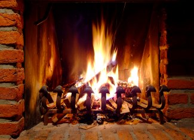

How To Make Your Fireplace More Efficient
You can make your fireplace more energy efficient with a few do-it-yourself projects.
By Troy Griepentrog
Feb. 12, 2008
As you sit by the fireplace enjoying the glow on these cold winter nights, are you content knowing you’re using a renewable fuel to warm your home? Depending on the type of fireplace you have, it may actually waste more energy than it creates throughout the season. The problem is that most heat goes up the chimney, drawing cold air into the house to replace the heated air. When a fire isn’t burning, warm air can still escape through the chimney. Many products are promoted as increasing the efficiency of your fireplace, but not all of them are as effective - or safe - as you might like them to be.
- A fireback is simply a heavy sheet of metal (traditionally cast iron) behind the fire. In addition to protecting masonry in the back of the fireplace, a fireback theoretically reflects heat into the room (instead of all the heat going up the chimney). But don’t expect significant results if you add a fireback to your fireplace. Wood-heat expert, John Gulland, says, “Firebacks had a little validity 100 years ago when there weren't many good alternatives, but these days they are mostly decorative.” Estimated cost: $75 to $350.
- The damper is the metal plate that regulates airflow through the chimney. Some dampers fit snuggly when they’re new, but frequently warp within a year or two, producing a loose fit and allowing air to leak past them. Chimney cap dampers close the entire top of the chimney, so they reduce heat loss when the fireplace is not being used, but don’t improve efficiency otherwise. Estimated cost: $160 to $400 for a chimney cap model.
- Fireplace doors are supposed to reduce the amount of air that would otherwise be siphoned up the chimney. Depending on the type of glass in the doors, some heat still radiates through the doors into the house. “Cheap doors use tempered glass, which breaks if you close the doors when a fire is burning. Ceramic glass doors can produce a small efficiency improvement but are stunningly expensive. Fireplace doors are almost never tight enough to prevent cold air from backdrafts when the fireplace is not being used,” Gulland says. Estimated cost: $200 to over $1,000.
- Grate heaters and radiators aren’t as large as complete fireplace inserts (see below), but capture a significant amount of heat from the fire and force it into the house. “I consider these to be a hazardous product because they actually make heat,” Gulland says, “But a decorative masonry fireplace isn’t designed for heating, and the building code clearances were established before this kind of thing was contemplated. So, they don’t prevent overheating of adjacent combustibles. I don't recommend these at all.” Estimated cost: $410 to $615.
To make your fireplace truly efficient, you’ll want to install an insert approved by the U.S. Environmental Protection Agency (EPA). A fireplace insert is basically a woodstove that fits into a masonry fireplace. Within the last 15 years, fireplace inserts have become much more energy efficient. “To improve efficiency and reduce standby losses, this is the only option I recommend. To be safe and effective, the insert must have a stainless steel liner run right to the top of the chimney,” Gulland says. Estimated cost: $3,000 and up.
If you’re not using your fireplace regularly, inflatable plugs can stop warm air from going up the chimney when the fireplace is not in use. Estimated cost: $50 to $70.
For more information on fireplaces, read Choose a Fireplace for Beauty and Warmth.
Do you have other suggestions for making fireplaces more efficient? Share them in the comments section.

ISTOCKPHOTO/OLIVER MALMS
An open masonry fireplace seems cozy, but it's not efficient for home heating.
|
|
|